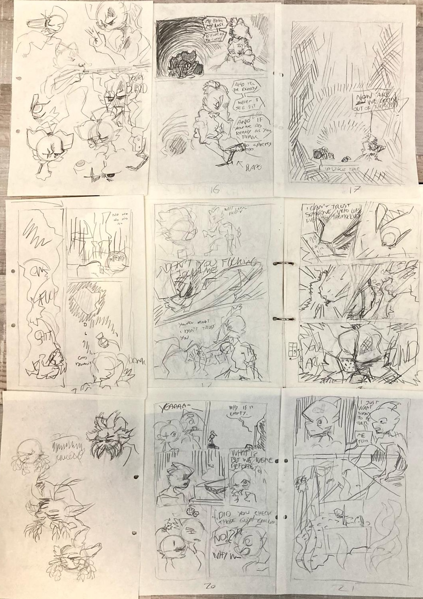

Pirate Cat Strip


Een strip waar ik in mijn eigen tijd aan werk.
Proces
Pagina's beginnen als ruwe potloodschetsen om de algemene flow uit te werken via pose, plaatjes-layout, etc.
Enkele schetsen voor Pirate Cat #2
Deze schetsen worden dan verwerkt tot een ruwe digitale versie. Deze versies gebruik ik om feedback te krijgen over layout en mogelijk onduidleijke aspecten, dit pas ik dan toe voordat er aan lijnen wordt gewerkt.
Een voorbeeld van een panel dat veranderingen heeft gekregen na feedback.

Onaffe pagina's van #3 en #4.
Deze worden dan netjes gelined en geletterd tot een affe pagina.
De uiteindelijke pagina's te zien in Pirate Cat #3.